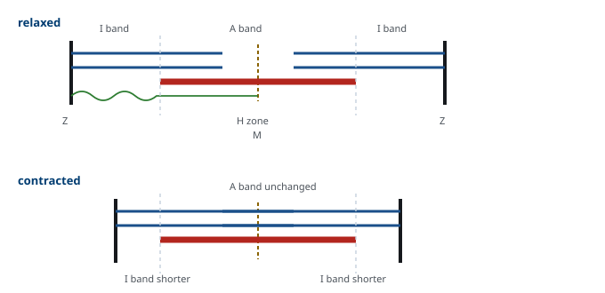
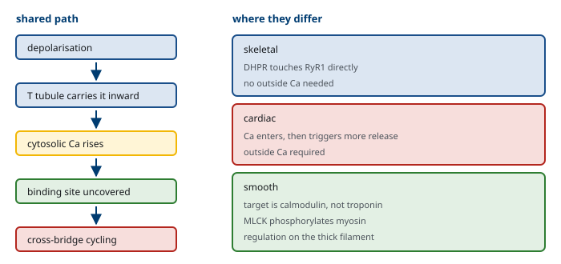

M01-W03-L03 · 인체일반생물학과 기초세포생물학
근육 요약: 근육 유형·수축·운동
Muscle: Types, Contraction and Movement
학습목표
- 근육이 해결하는 문제를 에너지 변환의 관점에서 규정하고 세 종류 근육을 구조와 조절로 구분한다.
- 골격근의 구조를 근섬유에서 sarcomere까지 단계적으로 서술하고 각 띠의 구성을 쓴다.
- 미끄럼 필라멘트 모형의 근거를 수축 시 띠의 변화로 설명한다.
- Cross-bridge 주기를 네 단계로 서술하고 각 단계에서 ATP가 하는 일을 구분한다.
- 흥분–수축 짝이음의 경로를 막전위에서 Ca²⁺ 방출까지 추적하고 세 근육에서의 차이를 설명한다.
- 신경근 접합부의 구조와 전달 과정을 쓰고 안전 역이 큰 이유를 설명한다.
- 운동단위의 정의를 쓰고 힘의 크기가 조절되는 두 가지 방식을 설명한다.
- 길이–장력 관계와 힘–속도 관계를 sarcomere 구조로 설명한다.
- 근섬유 유형을 대사 특성으로 분류하고 운동 종류와 연결한다.
- 심근과 평활근이 골격근과 다른 점을 조절 기전으로 설명한다.
- 근육 질환을 신경원성과 근원성으로 가르는 기준을 쓰고 대표 질환을 분류한다.
선수지식
- M01-W01-L01 순환계 요약 — 심근의 수축과 Frank–Starling 기전
- M01-W03-L02 동물행동 요약 — 운동신경세포, 반사궁, 근방추
- M01-W09-L02 생체에너지 — ATP와 자유에너지의 기본
강의 구성
- 1. 근육이 해결하는 문제
- 2. 골격근의 구조 — 반복되는 단위
- 3. 미끄럼 필라멘트 모형
- 4. Cross-bridge 주기 — 당기는 분자 기계
- 5. 흥분–수축 짝이음
- 6. 신경근 접합부와 운동단위
- 7. 근육의 이완과 Ca²⁺의 회수
- 8. 수축의 역학
- 9. 근육과 뼈 — 움직임의 역학
- 10. 근섬유 유형과 에너지 공급
- 11. 심근과 평활근 — 같은 기계, 다른 조절
- 12. 근육의 발생과 유지
- 13. 근육의 적응과 재생
- 14. 근육 질환을 읽는 논리
- 15. 이 수업이 이어지는 곳
1. 근육이 해결하는 문제
근육은 화학 에너지를 기계적 일로 바꾸는 장치다. 이 변환을 수행하는 기계가 자동차 엔진과 다른 점이 두 가지 있다.
첫째, 열을 거치지 않는다. 열기관은 연료를 태워 얻은 열로 기체를 팽창시켜 일을 하지만, 근육은 ATP의 가수분해로 얻은 에너지를 단백질의 형태 변화로 직접 바꾼다. 열은 부산물이고, 효율은 약 20~25%다. 나머지는 열로 흩어지며 이 열이 체온 유지에 쓰인다. 추울 때 떠는 것이 이 부산물을 적극적으로 쓰는 것이다.
둘째, 분자 하나가 아주 작은 일을 하고 그것을 엄청난 수로 합친다. myosin 머리 하나가 한 번에 만드는 힘은 몇 피코뉴턴, 움직이는 거리는 약 10 nm에 불과하다. 이 미세한 사건이 한 근육에 10의 17제곱 단위로 모여 수십 킬로그램을 들어 올린다. 근육의 구조가 반복과 정렬로 이루어진 이유가 여기에 있다. 작은 힘을 같은 방향으로 쌓으려면 모든 분자가 같은 축에 나란히 놓여야 한다.
세 종류의 근육이 이 일을 서로 다른 조건에서 수행한다.
| 골격근 | 심근 | 평활근 | |
|---|---|---|---|
| 가로무늬 | 있다 | 있다 | 없다 |
| 핵 | 여러 개, 가장자리 | 하나, 중앙 | 하나, 중앙 |
| 조절 | 수의적, 체성 신경 | 불수의, 자동능 | 불수의, 자율신경·호르몬·늘어남 |
| 세포 간 연결 | 없다 | gap junction(사이원반) | gap junction(단위형) |
| Ca²⁺의 출처 | 거의 전부 sarcoplasmic reticulum | SR + 세포 밖 | 주로 세포 밖 + SR |
| Ca²⁺의 결합 표적 | troponin C | troponin C | calmodulin |
| 수축 속도 | 빠름 | 중간 | 느림 |
| 피로 | 유형에 따라 다름 | 피로하지 않음 | 피로하지 않음, 적은 에너지로 긴장 유지 |
표의 마지막 두 행이 각 근육의 쓰임을 설명한다. 골격근은 빠르고 강하게 당기지만 오래 유지하면 지친다. 심근은 평생 쉬지 않고 뛰어야 하므로 피로하지 않아야 한다. 평활근은 혈관과 소화관의 긴장을 몇 시간씩 유지해야 하므로 적은 에너지로 긴장을 붙잡는 방식이 필요하다.
2. 골격근의 구조 — 반복되는 단위
골격근은 여러 수준의 다발 구조로 되어 있다. 각 수준마다 결합조직이 감싸고, 이 결합조직이 모여 힘줄이 되어 뼈에 붙는다.
근육 → 근다발 → 근섬유(근육세포) → 근원섬유 → sarcomere
근섬유. 하나의 근육세포다. 발생 과정에서 여러 근원세포가 융합해 만들어지므로 핵이 여러 개이고, 핵이 세포 가장자리로 밀려나 있다. 길이가 수 cm에 이르는 거대한 세포이며, 하나의 핵이 담당하는 세포질 범위가 제한되어 있으므로 여러 핵이 필요하다.
근원섬유. 근섬유 안을 가득 채운 가는 섬유 다발이다. 지름 약 1~2 μm이며 수축 장치 그 자체다.
Sarcomere. 근원섬유를 길이 방향으로 반복하는 단위이며, Z선에서 Z선까지를 말한다. 안정 시 길이는 약 2.2 μm다. 두 종류의 필라멘트가 규칙적으로 겹쳐 있다.
- 가는 필라멘트: actin이 중심이고 tropomyosin과 troponin 복합체가 붙어 있다. Z선에 고정되어 가운데로 뻗는다.
- 굵은 필라멘트: myosin이 다발을 이룬 것이다. 머리 부분이 바깥으로 돌출해 있고, sarcomere 가운데에 M선으로 고정된다.
이 배열이 현미경에서 줄무늬로 보인다. 띠의 이름과 구성을 정확히 구분해야 다음 절의 논의가 가능하다.
| 구조 | 구성 | 수축 시 변화 |
|---|---|---|
| A대 | 굵은 필라멘트의 전체 길이(가는 것과 겹친 부분 포함) | 변하지 않는다 |
| I대 | 가는 필라멘트만 있는 구간 | 짧아진다 |
| H구역 | 굵은 필라멘트만 있는 구간(A대 가운데) | 짧아진다 |
| Z선 | 가는 필라멘트가 고정되는 경계 | 서로 가까워진다 |
| M선 | 굵은 필라멘트가 고정되는 중앙선 | 위치 유지 |
Titin. Z선에서 M선까지 걸쳐 있는 거대 단백질이다. 사람 단백질 가운데 가장 크며, 용수철처럼 작동해 굵은 필라멘트를 가운데에 유지하고 과도하게 늘어난 근육을 되돌린다. 근육의 수동 장력이 주로 titin에서 나온다.

3. 미끄럼 필라멘트 모형
근육이 짧아질 때 필라멘트 자체가 짧아진다고 생각하기 쉽다. 그러나 관찰은 다른 답을 가리킨다.
근거. 수축하는 근육의 전자현미경 사진에서 A대의 길이는 변하지 않고 I대와 H구역만 짧아진다. A대는 굵은 필라멘트의 길이이므로, 굵은 필라멘트는 그대로다. I대는 가는 필라멘트 가운데 겹치지 않은 부분이고 H구역은 굵은 필라멘트 가운데 겹치지 않은 부분이므로, 둘이 함께 짧아진다는 것은 겹친 정도가 늘었다는 뜻이다.
결론은 하나다. 필라멘트의 길이는 변하지 않고 서로 미끄러져 들어간다. 이것이 미끄럼 필라멘트 모형이며, 1950년대에 두 연구 집단이 독립적으로 같은 해에 제안했다.
이 모형이 중요한 이유는 수축을 분자 수준의 질문으로 바꾸어 놓았기 때문이다. "근육이 어떻게 짧아지는가"가 "무엇이 두 필라멘트를 서로 미끄러지게 하는가"로 바뀌었고, 답은 myosin 머리가 actin을 붙잡고 당기는 주기적 운동이었다.
4. Cross-bridge 주기 — 당기는 분자 기계
Myosin 머리는 ATP 가수분해효소이면서 동시에 actin 결합 부위를 가진다. 두 성질이 맞물려 주기가 돌아간다. 네 단계로 정리한다.
1. 결합(attachment). ADP와 Pi를 쥔 myosin 머리가 actin에 결합한다. 이 상태의 머리는 "장전된" 상태로, 이미 ATP 가수분해 에너지를 구조 안에 저장하고 있다. 2. 파워 스트로크(power stroke). Pi가 떨어져 나가면서 머리가 각도를 바꾸어 약 10 nm 당긴다. 가는 필라멘트가 가운데로 끌려 들어간다. 이어 ADP가 떨어진다. 3. 분리(detachment). 새 ATP가 myosin 머리에 결합하면 actin에 대한 친화도가 급격히 떨어져 머리가 떨어진다. 4. 재장전(cocking). 머리가 ATP를 ADP와 Pi로 가수분해하고, 그 에너지로 원래 각도로 되돌아간다. 다시 1번으로 간다.
ATP가 두 곳에서 쓰인다는 점이 핵심이다. 하나는 4단계의 재장전에서 쓰이고, 다른 하나는 3단계에서 결합한 머리를 떼어 내는 데 쓰인다. 두 번째 역할이 직관에 반한다. ATP는 당기는 데 쓰이는 것이 아니라 놓는 데 쓰인다.
조절은 가는 필라멘트에서 일어난다. 안정 상태에서 tropomyosin이 actin의 myosin 결합 부위를 덮고 있다. Ca²⁺이 troponin C에 결합하면 troponin 복합체의 구조가 바뀌고, 이것이 tropomyosin을 옆으로 밀어 결합 부위를 노출시킨다. 즉 Ca²⁺은 기계를 작동시키는 것이 아니라 잠금을 푸는 것이다. 기계는 ATP가 있는 한 언제든 돌 준비가 되어 있다.
5. 흥분–수축 짝이음
운동신경의 신호가 어떻게 Ca²⁺ 방출로 이어지는지를 추적한다. 골격근의 경로는 다음과 같다.
1. 신경근 접합부에서 아세틸콜린이 방출되어 근섬유막을 탈분극시킨다. 2. 활동전위가 근섬유막을 따라 퍼지고, T세관(transverse tubule) 을 통해 세포 안쪽 깊숙이 전달된다. 3. T세관 막의 DHPR(dihydropyridine 수용체, 전압 센서)이 전압 변화를 감지한다. 4. 골격근에서는 DHPR이 sarcoplasmic reticulum 막의 RyR1(ryanodine 수용체)과 물리적으로 맞닿아 있어, 전압 센서의 구조 변화가 기계적으로 RyR을 연다. 5. SR에 저장된 Ca²⁺이 쏟아져 나와 troponin C에 결합하고 수축이 시작된다. 6. SERCA 펌프가 ATP를 써서 Ca²⁺을 SR로 되돌리면 이완한다.
T세관이 필요한 이유를 분명히 해야 한다. 근섬유는 지름이 수십 μm로 크므로, 막에서 일어난 탈분극이 확산으로 중심부까지 전달되기를 기다리면 바깥과 안쪽의 수축 시점이 어긋난다. T세관은 막을 안으로 접어 넣어 모든 근원섬유가 동시에 신호를 받게 한다. M01-W01-L01의 확산 거리 문제와 같은 해법이다.
세 근육의 차이가 여기서 갈린다.
- 골격근: DHPR과 RyR1의 물리적 결합. 세포 밖 Ca²⁺ 없이도 수축한다.
- 심근: DHPR이 실제로 Ca²⁺ 통로로 작동해 소량의 Ca²⁺이 들어오고, 이것이 RyR2를 열어 더 많은 Ca²⁺을 방출시킨다(Ca²⁺ 유도 Ca²⁺ 방출). 따라서 세포 밖 Ca²⁺이 없으면 수축하지 않는다.
- 평활근: 세포 밖에서 들어오는 Ca²⁺의 비중이 크고, 표적이 troponin이 아니라 calmodulin이다.

6. 신경근 접합부와 운동단위
신경근 접합부. 운동신경 말단과 근섬유막이 만나는 특수한 시냅스다. 과정은 일반 시냅스와 같지만 매우 신뢰도가 높다는 점이 다르다.
활동전위가 말단에 도달하면 전압 개폐 Ca²⁺ 통로가 열리고, 들어온 Ca²⁺이 아세틸콜린 소포의 융합을 유발한다. 아세틸콜린이 근섬유막의 니코틴성 수용체에 결합하면 양이온 통로가 열려 탈분극(종판 전위)이 생기고, 이것이 역치를 넘어 활동전위를 만든다. 아세틸콜린은 틈새의 acetylcholinesterase에 의해 빠르게 분해된다.
안전 역(safety factor). 한 번의 방출로 생기는 종판 전위는 역치를 넘기는 데 필요한 양의 서너 배에 이른다. 즉 신호가 거의 100% 전달된다. 중추신경계의 시냅스가 수많은 입력을 합산해 결정하는 것과 달리, 신경근 접합부는 판단하지 않고 전달만 한다. 운동신경세포가 이미 결정을 내렸으므로 그 명령이 누락 없이 실행되어야 하기 때문이다.
안전 역이 크다는 사실이 질환의 양상을 설명한다. 수용체가 상당 부분 소실되어도 한동안 증상이 없다가, 역치 아래로 떨어지면 갑자기 증상이 나타난다. 또 반복 자극에서 전달물질 방출이 조금씩 줄어드는 정상적 현상이 정상인에게는 문제가 되지 않지만 안전 역이 줄어든 환자에게는 반복할수록 약해지는 양상으로 드러난다.
운동단위(motor unit). 하나의 운동신경세포와 그것이 지배하는 모든 근섬유를 말한다. 한 신경세포가 흥분하면 그 단위의 모든 섬유가 동시에 수축한다. 따라서 운동단위가 근육 조절의 최소 단위다.
운동단위의 크기는 근육의 용도에 따라 크게 다르다. 눈 바깥근육은 한 신경세포가 10개 미만의 섬유를 지배해 정밀한 조절이 가능하고, 장딴지근은 한 신경세포가 1,000개 이상을 지배해 큰 힘을 낸다. 정밀도와 힘은 맞바꾸는 관계다.
힘의 조절. 근육이 내는 힘은 두 가지로 조절된다.
- 동원(recruitment): 활성화하는 운동단위의 수를 늘린다. 작은 단위부터 순서대로 동원되며(크기 원리), 그 결과 약한 힘에서는 미세 조절이 가능하고 강한 힘에서는 큰 단위가 더해진다.
- 빈도 변조: 각 운동단위에 가는 활동전위의 빈도를 올린다. 빈도가 높아지면 연축이 겹쳐 쌓여 더 큰 힘이 난다.
7. 근육의 이완과 Ca²⁺의 회수
수축을 끄는 일은 켜는 일만큼 중요하고, 에너지도 더 많이 든다. 이완이 실패하면 근육이 풀리지 않고, 심장에서는 충만이 되지 않으며, 혈관에서는 긴장이 유지된다.
Ca²⁺을 되돌리는 세 경로. 세포질의 Ca²⁺ 농도를 안정 시 수준(약 10⁻⁷ M)으로 되돌려야 troponin에서 Ca²⁺이 떨어지고 tropomyosin이 결합 부위를 다시 덮는다.
- SERCA: sarcoplasmic reticulum 막의 Ca²⁺ 펌프로, ATP를 써서 Ca²⁺을 SR 안으로 되돌린다. 골격근에서 회수의 대부분을 담당한다.
- Na⁺/Ca²⁺ 교환체: 막을 가로질러 Na⁺ 세 개를 들여오며 Ca²⁺ 하나를 내보낸다. 심근에서 비중이 크다.
- 막의 Ca²⁺-ATPase: 세포 밖으로 직접 퍼낸다.
이완에도 ATP가 든다. SERCA 펌프가 소비하는 ATP는 안정 시 세포 에너지의 상당 부분을 차지하며, 수축 중에는 cross-bridge만큼 쓰기도 한다. 근육을 쉬게 하는 일이 공짜가 아니라는 점이 중요하다. 허혈이나 ATP 고갈에서 근육이 뻣뻣해지는 것은 cross-bridge가 떨어지지 못하는 것과 Ca²⁺이 회수되지 못하는 것이 겹친 결과다.
이완 속도의 조절. 심근에서 이완 속도는 조절 대상이다. 교감신경 자극에서 PKA가 phospholamban을 인산화하면, 평소 SERCA를 억제하고 있던 이 단백질의 억제가 풀려 Ca²⁺ 회수가 빨라진다. 그 결과 심박수가 올라가도 충만 시간이 확보된다. 수축력 증가와 이완 가속이 같은 신호로 함께 일어나는 설계이며, 둘 중 하나만 올라가면 빠른 심박수에서 심장이 제대로 채워지지 않는다.
8. 수축의 역학
연축과 강축. 한 번의 활동전위로 생기는 짧은 수축이 연축(twitch) 이다. 활동전위가 끝나기 전에 다음 자극이 오면 수축이 겹쳐 쌓이고(가중), 자극이 충분히 빠르면 개별 연축이 구분되지 않는 지속적 수축인 강축(tetanus) 이 된다.
가중이 가능한 이유는 활동전위보다 수축이 훨씬 길기 때문이다. 골격근에서 활동전위는 수 ms이고 불응기도 짧은데 연축은 수십 ms 지속되므로, 이전 수축이 끝나기 전에 다음 자극을 줄 수 있다. 심근에서는 반대다. 활동전위의 평탄기가 길어 불응기가 수축 기간 거의 전체를 덮으므로 가중이 일어날 수 없고, 따라서 심근은 강축에 빠지지 않는다. 심장이 수축과 이완을 반드시 번갈아 해야 하므로 필수적인 성질이다(M01-W01-L01).
길이–장력 관계. 근육이 낼 수 있는 힘은 수축 시작 시점의 길이에 따라 달라지며, 중간 길이에서 최대가 되는 종 모양 곡선을 그린다. Sarcomere 구조로 설명된다.
- 너무 짧으면: 가는 필라멘트들이 서로 겹쳐 방해하고 굵은 필라멘트가 Z선에 닿아 힘이 준다.
- 최적 길이(약 2.0~2.2 μm): 겹침이 최대이면서 방해가 없어 가장 많은 cross-bridge가 형성된다.
- 너무 길면: 겹침이 줄어 형성 가능한 cross-bridge가 줄고 힘이 준다.
이 관계가 심장에서 Frank–Starling 기전의 분자적 근거가 된다. 다만 심근은 정상 범위에서 최적 길이보다 짧은 쪽에 있어, 늘어날수록 힘이 커지는 구간에서 작동한다.
힘–속도 관계. 부하가 클수록 수축 속도가 느려지고, 부하가 최대 장력에 이르면 속도가 0이 된다. 부하가 없으면 속도가 최대다. Cross-bridge 주기의 속도가 한정되어 있기 때문이며, 무거운 것을 들 때 천천히 움직이는 것이 이 관계의 일상적 표현이다.
직렬 탄성 요소. 근육이 힘을 내도 그 힘이 곧바로 뼈에 전달되지는 않는다. 힘줄과 결합조직이 먼저 늘어나기 때문이다. 이 성질이 두 가지 결과를 만든다. 하나는 힘 발생의 지연으로, 수축이 시작되고 장력이 뼈에 전해지기까지 시간이 걸린다. 다른 하나는 에너지 저장이다. 늘어난 힘줄이 용수철처럼 에너지를 저장했다가 되돌려주므로, 달리기나 점프에서 근육이 하는 일의 상당 부분을 힘줄이 대신한다. 쪼그렸다가 바로 뛰면 더 높이 뛰는 것이 저장된 탄성 에너지를 쓰기 때문이다.
수축의 종류. 힘과 길이의 조합으로 나눈다. 등장성 수축은 장력이 일정하고 길이가 변하는 것, 등척성 수축은 길이가 변하지 않고 장력만 변하는 것이다. 물건을 들어 올리는 것이 전자, 무거운 것을 든 채 버티는 것이 후자다. 근육이 늘어나면서 장력을 내는 신장성 수축도 있으며, 계단을 내려갈 때 넙다리네갈래근이 이렇게 작동한다. 신장성 수축은 같은 힘을 내면서 에너지를 적게 쓰지만 근손상을 가장 많이 일으킨다.
9. 근육과 뼈 — 움직임의 역학
근육이 내는 힘이 곧 몸이 내는 힘은 아니다. 힘은 뼈라는 지렛대를 통해 전달되며, 그 과정에서 크기와 속도가 교환된다.
지렛대의 세 종류. 관절이 받침점, 근육이 힘점, 부하가 작용점이다. 셋의 배치에 따라 세 종류로 나뉜다.
- 1종: 받침점이 가운데. 목뼈 위에서 머리를 뒤로 젖히는 뒤통수 근육이 그렇다.
- 2종: 부하가 가운데. 발끝으로 서는 동작에서 발허리발가락관절이 받침점, 몸무게가 부하, 장딴지근이 힘점이다. 힘에서 이득을 본다.
- 3종: 힘점이 가운데. 몸에서 가장 흔한 형태다. 팔꿈치를 굽히는 위팔두갈래근이 전형으로, 근육이 붙는 자리가 관절에 매우 가깝다.
3종 지렛대가 흔하다는 사실이 중요한 결과를 낳는다. 근육의 부착점이 관절에 가까우므로 모멘트 팔이 짧고, 따라서 근육은 부하보다 훨씬 큰 힘을 내야 한다. 손에 5 kg을 들고 있을 때 위팔두갈래근은 수십 kg에 해당하는 힘을 낸다. 역학적으로는 손해다.
그런데 이 설계가 선택된 이유가 있다. 손해를 보는 대신 얻는 것이 속도와 운동 범위다. 근육이 조금만 짧아져도 손끝은 크게 움직인다. 근육이 1 cm 수축할 때 손은 10 cm 이상 이동한다. 몸이 필요로 한 것은 무거운 것을 천천히 드는 능력이 아니라 팔다리를 빠르게 휘두르는 능력이었다는 뜻이다.
근육의 배열. 같은 부피의 근육이라도 섬유의 배열에 따라 성질이 달라진다.
- 평행 배열: 섬유가 근육의 긴 축과 나란하다. 섬유가 길어 수축 거리와 속도에서 유리하다. 넙다리빗근이 그렇다.
- 깃 배열(pennate): 섬유가 힘줄에 비스듬히 붙는다. 같은 부피에 더 많은 섬유를 채울 수 있어 생리적 단면적이 커지고 힘에서 유리하다. 대신 섬유가 짧아 수축 거리가 줄고, 비스듬한 각도 때문에 힘의 일부가 손실된다. 넙다리곧은근과 장딴지근이 그렇다.
근육이 내는 최대 힘은 부피가 아니라 생리적 단면적, 즉 모든 섬유를 가로지르는 단면의 합에 비례한다. 깃 배열이 힘에서 유리한 이유가 이 때문이다.
관절 각도와 힘. 같은 근육이라도 관절 각도에 따라 낼 수 있는 토크가 달라진다. 두 요인이 겹친다. 하나는 7절의 길이–장력 관계로, 각도에 따라 sarcomere 길이가 달라진다. 다른 하나는 모멘트 팔로, 각도에 따라 힘이 작용하는 지렛대의 길이가 달라진다. 두 곡선의 곱이 실제 토크 곡선이며, 그래서 팔씨름이나 역도에서 특정 각도에서 유독 힘이 약해지는 구간이 생긴다.
10. 근섬유 유형과 에너지 공급
에너지 공급의 세 체계. 근육은 ATP를 거의 저장하지 않는다. 안정 시 농도로는 몇 초분의 수축밖에 되지 않으므로, 쓰는 속도로 다시 만들어야 한다. 세 체계가 시간 규모를 나누어 맡는다.
| 체계 | 작동 시간 | 기전 | 특징 |
|---|---|---|---|
| Phosphocreatine | 수 초~10초 | creatine kinase가 PCr의 인산을 ADP에 옮긴다 | 가장 빠르다. 저장량이 적다 |
| 혐기성 glycolysis | 10초~2분 | 포도당을 젖산까지 분해 | 빠르지만 ATP 수율이 낮고 산이 쌓인다 |
| 산화적 인산화 | 2분 이상 | 미토콘드리아에서 완전 산화 | 느리지만 수율이 높고 오래간다 |
세 체계는 순차적으로 바뀌는 것이 아니라 비중이 바뀐다. 100 m 달리기는 앞의 두 체계가, 마라톤은 세 번째가 지배한다.
근섬유 유형. 섬유마다 이 체계들의 비중이 다르고, 그에 맞춰 구조도 다르다.
| I형(느린 산화) | IIa형(빠른 산화해당) | IIx형(빠른 해당) | |
|---|---|---|---|
| 수축 속도 | 느림 | 빠름 | 가장 빠름 |
| 주 에너지 | 산화적 인산화 | 둘 다 | 혐기성 glycolysis |
| 미토콘드리아 | 많다 | 많다 | 적다 |
| 모세혈관 | 조밀 | 중간 | 성기다 |
| Myoglobin | 많다(붉다) | 중간 | 적다(희다) |
| 피로 저항 | 높다 | 중간 | 낮다 |
| 용도 | 자세 유지, 지구력 | 중간 강도 반복 | 순간적 최대 힘 |
한 운동단위의 모든 섬유는 같은 유형이다. 운동신경세포가 섬유의 성질을 지정하기 때문이며, 신경을 서로 바꿔 연결하는 실험에서 섬유 유형이 새 신경을 따라 바뀌는 것으로 확인되었다. 6절의 크기 원리와 맞물리면 설계가 보인다. 작은 운동신경세포가 I형 섬유를, 큰 운동신경세포가 II형 섬유를 지배하므로, 약한 힘에서는 피로에 강한 섬유만 쓰이고 큰 힘이 필요할 때만 쉽게 지치는 섬유가 동원된다.
11. 심근과 평활근 — 같은 기계, 다른 조절
심근. 골격근과 같은 sarcomere 구조를 가지고 troponin을 쓰지만, 세 가지가 다르다.
1. 세포가 연결되어 있다. 사이원반의 gap junction으로 전기적으로 이어져 심방 전체와 심실 전체가 각각 하나의 기능 단위로 수축한다. 운동단위처럼 일부만 수축시킬 수 없고 전부 아니면 전무로 작동한다. 따라서 심근은 동원으로 힘을 조절하지 못하고, 수축력 자체를 바꾸는 방식(세포 안 Ca²⁺의 양)으로 조절한다. 2. Ca²⁺ 유도 Ca²⁺ 방출에 의존한다. 세포 밖에서 들어온 Ca²⁺의 양이 방출량을 정하므로, 들어오는 Ca²⁺을 조절하면 수축력이 바뀐다. 교감신경의 β₁–cAMP–PKA 경로가 L형 Ca²⁺ 통로를 인산화해 수축력을 올리는 것이 이 지점이다. 3. 강축이 불가능하다. 7절에서 본 대로 긴 불응기가 가중을 막는다.
평활근. 차이가 더 크다.
- Sarcomere가 없다. 가는 필라멘트와 굵은 필라멘트가 세포를 가로질러 비스듬히 배열되고 밀집체(dense body) 에 고정된다. 가로무늬가 없는 이유이며, 세포가 모든 방향으로 짧아질 수 있다.
- 조절 표적이 다르다. Ca²⁺이 troponin이 아니라 calmodulin에 결합한다. Ca²⁺–calmodulin이 myosin light chain kinase(MLCK) 를 활성화하고, MLCK가 myosin 경쇄를 인산화해야 myosin이 actin과 상호작용할 수 있다. 즉 굵은 필라멘트 쪽에서 조절된다. 이완은 myosin light chain phosphatase가 인산기를 떼어 일어난다.
- 긴장을 싸게 유지한다. 인산화된 cross-bridge가 떨어지는 속도가 매우 느려지는 상태(latch)가 되면, 적은 ATP로 장력을 오래 유지할 수 있다. 혈관이 몇 시간씩 긴장을 유지하면서도 지치지 않는 이유다.
- 입력이 다양하다. 신경뿐 아니라 호르몬, 국소 대사물질, 늘어남 자체가 수축을 일으킨다. 일부 평활근은 자발적으로 탈분극해 스스로 수축한다(소화관의 느린 파동).
12. 근육의 발생과 유지
근육세포는 몸에서 가장 특이한 세포에 속한다. 여러 세포가 융합해 만들어지고, 분열하지 않으면서 평생 유지되며, 쓰임에 따라 크기를 바꾼다. 이 특성이 어떻게 생기는지를 보면 재생과 질환이 함께 설명된다.
근육이 만들어지는 과정. 골격근은 체절의 축옆중배엽에서 유래한다(M01-W03-L01). 과정은 네 단계다.
1. 결정: 중배엽 세포가 근육 계통으로 정해진다. MyoD와 Myf5 같은 전사인자가 켜지면서 근육모세포(myoblast)가 된다. 2. 증식: 근육모세포가 수를 늘린다. 이 단계에서는 아직 수축 단백질을 만들지 않는다. 3. 융합: 근육모세포들이 서로 융합해 다핵의 근관(myotube)을 만든다. 융합과 동시에 세포주기에서 영구히 빠져나온다. 4. 성숙: 수축 단백질 유전자가 대량으로 발현되고 sarcomere가 조립되며 신경 지배를 받아 섬유 유형이 정해진다.
2단계와 3단계가 배타적이라는 점이 중요하다. 융합해 분화를 시작한 세포는 더 이상 분열하지 않는다. 이 때문에 성인 근육은 손상되어도 기존 근섬유가 분열해 메울 수 없고, 별도의 줄기세포가 필요하다.
MyoD의 의미. MyoD를 섬유아세포처럼 근육이 아닌 세포에 강제로 발현시키면 그 세포가 근육 특이 유전자를 켜고 근관 모양으로 융합한다. 전사인자 하나가 세포의 정체성을 지정할 수 있다는 것을 보인 고전적 실험이며, 뒤에 역분화 연구로 이어졌다. 분자 기전은 M01-W07-L02에서 전사인자의 모듈 구조와 함께 다시 다룬다.
유지와 핵 영역. 근섬유는 길이가 수 cm에 이르므로 핵 하나가 담당하는 세포질 범위에 한계가 있다. 섬유가 굵어지려면 핵도 늘어야 하고, 그 핵은 위성세포가 융합해 공급한다. 거꾸로 위축에서는 세포질이 줄어도 핵은 일부 남는다는 관찰이 있는데, 이 때문에 한 번 훈련으로 늘어난 핵이 오래 남아 재훈련이 쉬워진다는 가설(근육 기억)이 제기되었다. 사람에서의 증거는 아직 논쟁 중이다.
13. 근육의 적응과 재생
훈련에 대한 적응. 자극의 종류가 적응의 방향을 정한다.
- 저항 훈련(무거운 부하, 적은 반복): 근섬유의 단면적이 커진다(비대). 수축 단백질이 늘어나는 것이며, 성인에서 근섬유의 수 자체는 거의 늘지 않는다. 초기 몇 주의 근력 증가는 신경계의 적응(동원 효율 향상)이 더 크다.
- 지구력 훈련(가벼운 부하, 많은 반복): 미토콘드리아와 모세혈관이 늘고 산화 효소가 증가한다. 단면적은 크게 변하지 않는다. IIx형이 IIa형 쪽으로 이동하는 변화도 관찰된다.
비활동에 대한 적응. 쓰지 않으면 빠르게 위축된다. 침상 안정이나 고정에서 수일 안에 단백질 합성이 줄고 분해가 늘어난다. 중력에 맞서 자세를 유지하는 근육(항중력근)이 특히 빨리 위축되며, 이것이 조기 보행과 재활을 강조하는 이유다.
재생과 위성세포. 근섬유는 다핵이고 분열하지 않지만 재생 능력이 있다. 근섬유 바깥 기저막 아래에 위성세포(satellite cell) 라는 줄기세포가 붙어 있다가, 손상이 생기면 활성화되어 증식하고 기존 근섬유에 융합하거나 새 근섬유를 만든다. 비대 과정에서 핵이 추가되는 것도 이 세포에서 온다.
14. 근육 질환을 읽는 논리
근력 약화를 호소하는 환자 앞에서 던지는 첫 질문은 "어디가 문제인가"다. 운동의 사슬은 네 단계이며, 각 단계의 손상이 서로 다른 양상을 만든다.
상위운동신경세포 → 하위운동신경세포 → 신경근 접합부 → 근육
| 신경원성(신경) | 근원성(근육) | |
|---|---|---|
| 약화의 분포 | 흔히 원위부 | 흔히 근위부 |
| 위축 | 뚜렷 | 중등도, 때로 가성 비대 |
| 섬유다발수축 | 있다 | 없다 |
| 감각 이상 | 동반될 수 있다 | 없다 |
| 심부건반사 | 소실 | 비교적 보존 |
| Creatine kinase | 정상~경미 상승 | 크게 상승 |
| 근전도 | 큰 진폭, 긴 지속의 운동단위 전위 | 작은 진폭, 짧은 지속 |
"머리를 빗거나 계단을 오르기 어렵다"는 근위부 약화의 전형적 호소이며 근원성을 시사한다. "단추를 잠그기 어렵다, 발이 끌린다"는 원위부 약화로 신경원성을 시사한다.
접합부 질환은 따로 가른다. 피로에 따라 변동하는 약화, 눈꺼풀 처짐과 복시로 시작하는 양상, 반복 자극에서의 변화가 단서다.
대표 질환의 분류.
- 근이영양증: 근섬유막을 세포골격에 연결하는 단백질의 결손. Duchenne 근이영양증은 dystrophin의 결손으로 수축할 때마다 막이 손상되어 섬유가 파괴되고 섬유화와 지방으로 대치된다. X 연관 열성이며 creatine kinase가 매우 높다. 장딴지의 가성 비대가 특징이다.
- 염증성 근병증: 다발근염, 피부근염. 근위부 약화와 creatine kinase 상승, 염증 소견.
- 대사성 근병증: 에너지 공급 경로의 결손. 어느 체계가 막혔는지에 따라 증상 시점이 다르다. 당 분해 경로의 결손(McArdle 병)은 운동 초기에 통증과 경련이 오고 잠시 쉬었다 하면 나아지며(지방 산화로 전환), 지방산 산화의 결손은 오래 지속되는 운동이나 공복에서 문제가 생긴다.
- 약물 유발: statin 관련 근병증이 흔하다.
- 내분비성: 갑상샘 기능저하증과 Cushing 증후군에서 근위부 약화가 나타난다.
15. 이 수업이 이어지는 곳
근육은 세포생물학과 대사, 그리고 임상을 잇는 자리에 있다. 각 주제가 어디에서 확대되는지를 정리한다.
- Actin과 myosin의 세포골격으로서의 일반 역할: M01-W10-L02에서 다룬다. 근수축은 세포골격 운동 단백질이 극단적으로 특수화된 사례다.
- 막전위와 이온 통로: M01-W10-L03과 M04-W02-L03에서 다룬다.
- 신경근 접합부의 시냅스 기전: M04-W03-L01에서 다룬다.
- ATP 생산과 대사 경로: M01-W09-L02와 M01-W09-L03에서 기초를, M02-W04와 M02-W08에서 상세를 다룬다.
- 심근의 수축과 심박출량: M01-W01-L01에서 이미 다루었다.
- 운동 조절의 중추 회로: M01-W03-L02와 M04-W06에서 다룬다.
- 근육 발생과 MyoD에 의한 운명 결정: M01-W07-L02에서 전사인자의 작동 사례로 다시 등장한다.
- 세포 손상과 괴사: 횡문근융해증의 세포 수준 기전은 M01-W12-L02에서 다룬다.
확인 문항
근육이 열기관과 다른 두 가지를 쓰고, 근육의 구조가 반복과 정렬로 이루어진 이유를 설명하시오.
해설
첫째, 열을 거치지 않는다. ATP 가수분해 에너지를 단백질의 형태 변화로 직접 기계적 일로 바꾸며 열은 부산물이다. 둘째, 분자 하나가 하는 일이 매우 작다. Myosin 머리 하나가 내는 힘은 몇 피코뉴턴이고 움직이는 거리는 약 10 nm에 불과하다. 이 미세한 일을 의미 있는 크기로 만들려면 막대한 수를 같은 방향으로 합쳐야 하고, 그러려면 모든 분자가 같은 축에 나란히 정렬되어야 한다. Sarcomere의 규칙적 반복 구조가 이 요구에서 나온다.
미끄럼 필라멘트 모형의 근거를 수축 시 띠의 변화로 설명하시오.
해설
수축하는 근육에서 A대의 길이는 변하지 않고 I대와 H구역만 짧아진다. A대는 굵은 필라멘트의 전체 길이이므로 굵은 필라멘트가 짧아지지 않았다는 뜻이다. I대는 가는 필라멘트 가운데 겹치지 않은 구간이고 H구역은 굵은 필라멘트 가운데 겹치지 않은 구간이므로, 둘이 함께 짧아진다는 것은 두 필라멘트가 겹친 정도가 늘었다는 뜻이다. 따라서 필라멘트의 길이는 변하지 않고 서로 미끄러져 들어가며, Z선이 가까워져 sarcomere가 짧아진다.
Cross-bridge 주기에서 ATP가 쓰이는 두 지점을 쓰고, 사후 강직이 어느 쪽을 증명하는지 설명하시오.
해설
ATP는 머리를 원래 각도로 되돌리는 재장전에 쓰이고, 또 하나는 actin에 결합한 머리를 떼어 내는 분리에 쓰인다. 두 번째 역할이 직관에 반하는데, ATP는 당기는 데가 아니라 놓는 데 쓰인다. 사후 강직이 이를 증명한다. 사망 후 ATP 생산이 멈추면 새 ATP가 myosin 머리에 결합하지 못해 머리를 actin에서 떼어 낼 수 없고, 결합이 고정되어 근육이 굳는다. 수축이 아니라 분리의 실패이며, 단백질이 분해되면서 풀린다.
Ca²⁺이 근수축에서 하는 일을 정확히 서술하고, 기계를 작동시키는 것과 어떻게 다른지 설명하시오.
해설
안정 상태에서 tropomyosin이 actin의 myosin 결합 부위를 덮고 있다. Ca²⁺이 troponin C에 결합하면 troponin 복합체의 구조가 바뀌고 이것이 tropomyosin을 옆으로 밀어 결합 부위를 노출시킨다. 즉 Ca²⁺은 수축 기계를 돌리는 에너지를 주는 것이 아니라 잠금을 푸는 역할만 한다. 기계 자체는 ATP가 있는 한 언제든 돌 준비가 되어 있으며, Ca²⁺은 그것이 actin에 접근할 수 있는지를 결정한다.
T세관이 필요한 이유를 설명하고, 골격근과 심근에서 흥분–수축 짝이음의 차이를 쓰시오.
해설
근섬유는 지름이 수십 μm로 커서 막의 탈분극이 확산으로 중심부까지 전달되기를 기다리면 바깥과 안쪽의 수축 시점이 어긋난다. T세관은 막을 세포 안으로 접어 넣어 모든 근원섬유가 동시에 신호를 받게 한다. 골격근에서는 T세관의 DHPR이 전압 센서로 작동해 sarcoplasmic reticulum의 RyR1과 물리적으로 맞닿아 있으므로, 전압 변화가 기계적으로 RyR을 열며 세포 밖 Ca²⁺ 없이도 수축한다. 심근에서는 DHPR이 실제 Ca²⁺ 통로로 작동해 들어온 소량의 Ca²⁺이 RyR2를 열어 더 많은 Ca²⁺을 방출시키므로 세포 밖 Ca²⁺이 없으면 수축하지 않는다.
악성 고열의 기전과 치료제의 작용 지점을 설명하시오.
해설
RyR1의 변이를 가진 사람이 흡입 마취제나 succinylcholine에 노출되면 sarcoplasmic reticulum에서 Ca²⁺이 통제 없이 방출된다. 지속적인 수축이 일어나고 Ca²⁺을 되돌리려는 펌프가 ATP를 대량 소모하면서 극심한 열이 발생하며, 근육이 파괴되어 고칼륨혈증, 산증, 미오글로빈뇨가 따른다. 치료제 dantrolene은 RyR1을 직접 억제해 Ca²⁺ 방출을 차단한다. 원인 분자를 알면 치료 표적이 그대로 정해지는 예다.
신경근 접합부의 안전 역이 큰 이유를 쓰고, 이 성질이 중증근무력증의 임상 양상을 어떻게 설명하는지 쓰시오.
해설
한 번의 아세틸콜린 방출로 생기는 종판 전위가 역치를 넘기는 데 필요한 양의 서너 배에 이르러 신호가 거의 100% 전달된다. 운동신경세포가 이미 결정을 내렸으므로 그 명령이 누락 없이 실행되어야 하기 때문이며, 접합부는 판단하지 않고 전달만 한다. 중증근무력증에서는 자가항체로 수용체가 줄지만 안전 역이 크므로 상당 부분이 소실될 때까지 증상이 없다가 역치 아래로 떨어지면 증상이 나타난다. 또 반복 자극에서 방출량이 조금씩 줄어드는 정상적 현상이 줄어든 안전 역에서는 전달 실패로 드러나므로, 쓸수록 약해지고 쉬면 회복되는 양상이 된다.
운동단위를 정의하고 근육이 힘을 조절하는 두 방식을 설명하시오. 크기 원리가 주는 이점도 쓰시오.
해설
운동단위는 하나의 운동신경세포와 그것이 지배하는 모든 근섬유를 말하며, 그 신경세포가 흥분하면 모든 섬유가 동시에 수축하므로 근육 조절의 최소 단위다. 힘은 활성화하는 운동단위의 수를 늘리는 동원과 각 단위에 가는 활동전위의 빈도를 올리는 빈도 변조로 조절된다. 크기 원리에 따라 작은 운동단위부터 순서대로 동원되므로, 약한 힘에서는 적은 수의 섬유만 움직여 미세한 조절이 가능하고 큰 힘이 필요할 때만 큰 단위가 더해진다. 작은 단위가 피로에 강한 I형 섬유를 지배하므로 일상적 활동에서는 지치지 않는 섬유만 쓰인다는 이점도 있다.
심근이 강축에 빠지지 않는 이유를 골격근과 비교해 설명하시오.
해설
가중이 일어나려면 이전 수축이 끝나기 전에 다음 활동전위를 줄 수 있어야 한다. 골격근에서는 활동전위가 수 ms이고 불응기가 짧은 데 비해 연축은 수십 ms 지속되므로 수축이 겹쳐 쌓여 강축이 가능하다. 심근은 활동전위에 긴 평탄기가 있어 지속 시간이 200~300 ms에 이르고 불응기가 수축 기간 거의 전체를 덮는다. 따라서 이전 수축이 끝나기 전에는 다시 흥분할 수 없어 가중이 불가능하다. 심장이 수축과 이완을 반드시 번갈아 해야 하므로 필수적인 성질이다.
길이–장력 관계를 sarcomere 구조로 설명하고, 이것이 심장 생리의 어느 개념과 연결되는지 쓰시오.
해설
근육이 너무 짧으면 가는 필라멘트들이 서로 겹쳐 방해하고 굵은 필라멘트가 Z선에 닿아 힘이 준다. 약 2.0~2.2 μm의 최적 길이에서는 겹침이 최대이면서 방해가 없어 가장 많은 cross-bridge가 형성되어 힘이 최대가 된다. 더 늘어나면 겹침이 줄어 형성 가능한 cross-bridge가 줄고 힘이 준다. 이 관계가 Frank–Starling 기전의 분자적 근거이며, 심근은 정상 범위에서 최적 길이보다 짧은 쪽에 있어 늘어날수록 힘이 커지는 구간에서 작동한다.
근섬유 유형 세 가지를 대사 특성으로 구분하고, 한 운동단위의 모든 섬유가 같은 유형인 이유를 쓰시오.
해설
I형은 느리게 수축하고 산화적 인산화에 의존하며 미토콘드리아와 모세혈관이 많고 myoglobin이 풍부해 붉으며 피로에 강하다. IIa형은 빠르게 수축하면서 산화와 해당을 모두 쓰고 피로 저항이 중간이다. IIx형은 가장 빠르고 혐기성 glycolysis에 의존하며 미토콘드리아가 적고 쉽게 지친다. 한 운동단위의 섬유가 모두 같은 유형인 것은 운동신경세포가 섬유의 성질을 지정하기 때문이며, 신경을 서로 바꿔 연결하는 실험에서 섬유 유형이 새 신경을 따라 바뀌는 것으로 확인되었다.
평활근의 수축 조절이 골격근과 다른 점을 세 가지로 설명하시오.
해설
첫째, sarcomere가 없고 필라멘트가 밀집체에 고정되어 비스듬히 배열되므로 가로무늬가 없고 모든 방향으로 짧아질 수 있다. 둘째, Ca²⁺의 표적이 troponin이 아니라 calmodulin이다. Ca²⁺–calmodulin이 myosin light chain kinase를 활성화하고 이 효소가 myosin 경쇄를 인산화해야 상호작용이 가능하므로, 가는 필라멘트가 아니라 굵은 필라멘트 쪽에서 조절된다. 셋째, 인산화된 cross-bridge의 분리 속도가 매우 느려지는 latch 상태가 있어 적은 ATP로 장력을 오래 유지할 수 있으며, 혈관과 소화관의 지속적 긴장이 이 방식으로 유지된다.
신경원성 약화와 근원성 약화를 다섯 가지 소견으로 구분하시오.
해설
신경원성은 흔히 원위부가 약해지고 위축이 뚜렷하며 섬유다발수축이 보이고 감각 이상이 동반될 수 있으며 심부건반사가 소실되고 creatine kinase는 정상이거나 경미하게 오른다. 근전도에서 큰 진폭과 긴 지속의 운동단위 전위가 나타난다. 근원성은 흔히 근위부가 약해지고 섬유다발수축이 없으며 감각은 정상이고 반사는 비교적 보존되며 creatine kinase가 크게 상승한다. 근전도에서 작은 진폭과 짧은 지속의 전위가 나타난다. 머리를 빗거나 계단을 오르기 어렵다는 호소는 근위부 약화로 근원성을, 단추를 잠그기 어렵고 발이 끌린다는 호소는 원위부 약화로 신경원성을 시사한다.
대사성 근병증에서 증상이 나타나는 시점이 어느 경로의 결손을 알려 주는지 설명하시오.
해설
에너지 공급의 세 체계가 시간 규모를 나누어 맡기 때문이다. 운동 시작 직후 몇 분 안에 통증과 경련이 오고 잠시 쉬었다 다시 하면 오히려 편해지는 이차 바람 현상은 glycogen 분해와 glycolysis의 결손을 시사한다. 처음 몇 초는 phosphocreatine으로 버티고 그 다음 구간을 담당할 당 분해가 막혀 있으며, 시간이 더 지나 지방산 산화로 넘어가면 공급이 재개되기 때문이다. 반대로 오래 지속되는 운동이나 금식 뒤에 근육통과 미오글로빈뇨가 나타나는 것은 지방산 산화 경로의 결손을 시사한다.
지연성 근육통이 젖산 때문이 아니라는 근거를 쓰고, 현재 받아들여지는 설명을 서술하시오.
해설
젖산은 운동 후 한 시간 이내에 대부분 제거되므로 24~48시간 뒤에 나타나는 통증을 설명할 수 없다. 운동 중 산 축적에 의한 피로와 이틀 뒤의 근육통은 시간 규모가 전혀 다른 별개의 현상이다. 지연성 근육통은 주로 신장성 수축에서 생기는 근섬유의 미세 손상과 그에 뒤따르는 염증 반응으로 설명된다. 신장성 수축은 근육이 늘어나면서 장력을 내는 형태로 같은 힘을 적은 에너지로 내지만 구조적 손상을 가장 많이 일으킨다.
3종 지렛대가 몸에서 가장 흔한데도 역학적으로 손해인 이유를 설명하고, 그 대신 무엇을 얻는지 쓰시오.
해설
3종 지렛대는 힘점이 받침점과 작용점 사이에 있고, 근육의 부착점이 관절에 가까워 모멘트 팔이 짧다. 따라서 근육은 부하보다 훨씬 큰 힘을 내야 하며, 손에 5 kg을 들 때 위팔두갈래근은 수십 kg에 해당하는 힘을 낸다. 대신 얻는 것은 속도와 운동 범위다. 근육이 1 cm만 짧아져도 손끝은 10 cm 이상 움직인다. 몸이 요구한 것이 무거운 것을 천천히 드는 능력이 아니라 팔다리를 빠르게 움직이는 능력이었기 때문에 이 설계가 선택되었다.
평행 배열 근육과 깃 배열 근육의 차이를 쓰고, 근육의 최대 힘이 무엇에 비례하는지 설명하시오.
해설
평행 배열은 섬유가 근육의 긴 축과 나란해 섬유가 길고, 수축 거리와 속도에서 유리하다. 깃 배열은 섬유가 힘줄에 비스듬히 붙어 같은 부피에 더 많은 섬유를 채울 수 있으므로 힘에서 유리하지만 섬유가 짧아 수축 거리가 줄고 비스듬한 각도 때문에 힘의 일부가 손실된다. 근육의 최대 힘은 전체 부피가 아니라 모든 섬유를 가로지르는 단면의 합인 생리적 단면적에 비례한다. 깃 배열이 힘에서 유리한 것이 이 때문이다.
근육의 이완이 수동적 과정이 아니라는 것을 설명하고, 심근에서 이완 속도가 조절되는 기전을 쓰시오.
해설
이완하려면 세포질의 Ca²⁺을 안정 시 수준으로 되돌려야 하는데, SERCA 펌프가 ATP를 써서 Ca²⁺을 sarcoplasmic reticulum으로 퍼 넣고 Na⁺/Ca²⁺ 교환체와 막의 Ca²⁺-ATPase가 세포 밖으로 내보낸다. 또 cross-bridge를 떼어 내는 데에도 ATP가 필요하다. 따라서 이완에도 상당한 에너지가 들며, ATP가 고갈되면 근육이 풀리지 않는다. 심근에서는 교감신경 자극으로 PKA가 phospholamban을 인산화하면 평소 SERCA를 억제하던 작용이 풀려 Ca²⁺ 회수가 빨라진다. 수축력 증가와 이완 가속이 같은 신호로 함께 일어나므로 심박수가 올라가도 충만 시간이 확보된다.
Digoxin이 수축력을 올리는 경로를 단계적으로 설명하고, 저칼륨혈증에서 독성이 커지는 이유를 쓰시오.
해설
Digoxin은 Na⁺/K⁺-ATPase를 억제해 세포 안 Na⁺ 농도를 올린다. Na⁺의 농도 기울기가 줄면 이를 동력으로 쓰는 Na⁺/Ca²⁺ 교환체가 Ca²⁺을 내보내는 능력이 떨어지고, 세포 안과 sarcoplasmic reticulum의 Ca²⁺이 늘어 수축력이 커진다. 수축 단백질에 직접 작용하지 않고 Ca²⁺ 회수 경로를 막아 간접적으로 작용하는 것이 특징이다. 저칼륨혈증에서 독성이 커지는 이유는 K⁺가 Na⁺/K⁺-ATPase의 digoxin 결합 부위를 두고 경쟁하기 때문이다. K⁺가 적으면 digoxin이 펌프에 더 잘 결합해 같은 혈중 농도에서도 억제가 강해지고, Ca²⁺ 과다로 지연 후탈분극과 부정맥이 생긴다.
근육모세포의 증식과 융합이 배타적이라는 것이 성인 근육의 재생에 어떤 결과를 낳는지 설명하시오.
해설
근육모세포는 증식하는 동안에는 수축 단백질을 만들지 않고, 서로 융합해 다핵의 근관이 되는 순간 세포주기에서 영구히 빠져나와 분화를 시작한다. 두 과정이 배타적이므로 분화를 마친 근섬유는 더 이상 분열할 수 없다. 따라서 성인 근육이 손상되어도 기존 근섬유가 분열해 메울 수 없고, 기저막 아래에 남아 있는 위성세포라는 별도의 줄기세포가 활성화되어 증식한 뒤 기존 섬유에 융합하거나 새 섬유를 만들어야 한다. 위성세포의 능력이 고갈되면 재생이 멈추고 섬유화와 지방 대치가 일어난다.
Duchenne 근이영양증에서 dystrophin의 결손이 근섬유 파괴로 이어지는 경로를 단계적으로 설명하시오.
해설
Dystrophin은 세포 안의 actin 세포골격과 세포막, 그리고 막 바깥의 기저막을 잇는 연결 고리다. 이것이 없으면 수축할 때마다 생기는 기계적 힘이 막으로 직접 전달되어 미세한 파열이 생긴다. 파열된 곳으로 Ca²⁺이 들어와 단백질 분해 효소를 활성화하고 섬유가 괴사한다. 위성세포가 반복해서 수리하지만 결국 재생 능력이 고갈되고, 손상된 근육이 섬유화 조직과 지방으로 대치된다. 세포 내용물이 혈액으로 새어 나오므로 creatine kinase가 매우 높게 측정되며, 장딴지에서 지방과 결합조직이 늘어 가성 비대가 나타난다.
참고문헌
- Hall JE, Hall ME. Guyton and Hall Textbook of Medical Physiology. 14th ed. Elsevier; 2021. Unit II, Membrane Physiology, Nerve, and Muscle.
- Boron WF, Boulpaep EL. Medical Physiology. 3rd ed. Elsevier; 2017. Section III, Cellular Physiology of Muscle.
- Alberts B, et al. Molecular Biology of the Cell. 7th ed. Chapter 16: The Cytoskeleton. W.W. Norton; 2022.
- MacIntosh BR, Gardiner PF, McComas AJ. Skeletal Muscle: Form and Function. 2nd ed. Human Kinetics; 2006.
- Huxley AF, Niedergerke R. Structural changes in muscle during contraction. Nature. 1954;173(4412):971–973.
- Huxley H, Hanson J. Changes in the cross-striations of muscle during contraction and stretch. Nature. 1954;173(4412):973–976.
- Rosenberg H, et al. Malignant hyperthermia: a review. Orphanet J Rare Dis. 2015;10:93.
- Cruz-Jentoft AJ, Sayer AA. Sarcopenia. Lancet. 2019;393(10191):2636–2646.